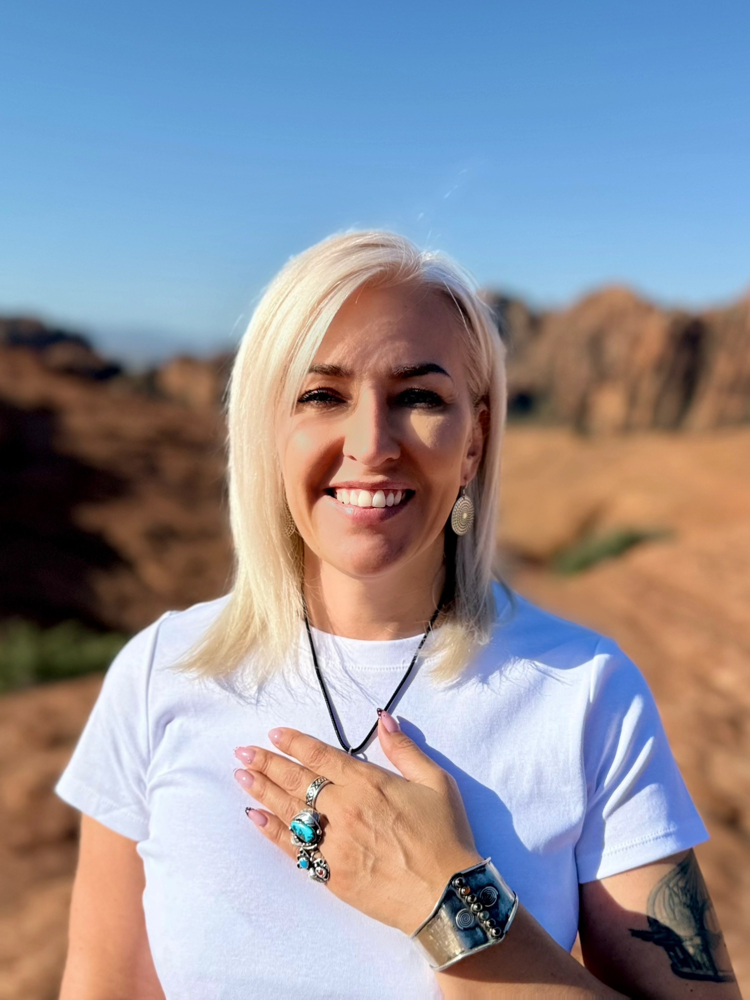
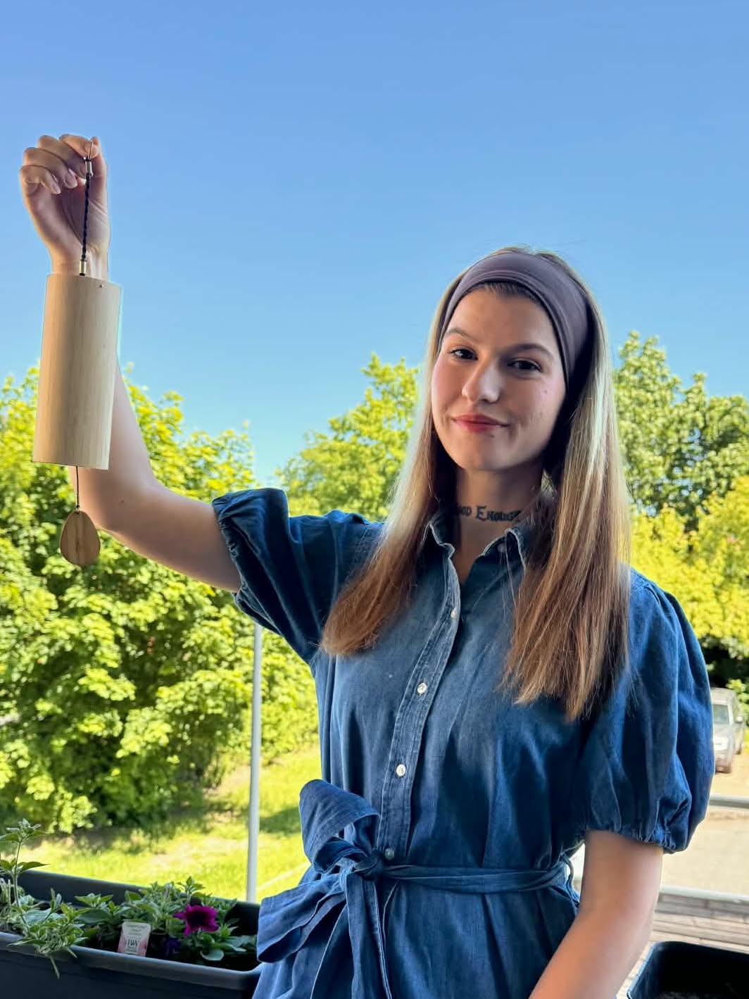

Meet the Team
Meet Kasia
For as long as I can remember, I have been curious about the deeper nature of life - consciousness, the human experience, and the invisible forces that shape our inner world.
Alongside my professional path, I completed academic studies in philosophy, which deepened my interest in the nature of existence, awareness, and the timeless questions of who we are and why we are here. Even while living a very outwardly focused life, the spiritual dimension of existence was always quietly present in the background.
For twenty years, I worked as a flight attendant for an international airline, traveling across continents and cultures. My work took me throughout Europe, Asia, Africa, the Americas, and the Caribbean. Living between different cultures and constantly moving through the world expanded my perspective in ways I could never have imagined.
Those years of travel became one of my greatest teachers. I experienced many different ways of living, encountered diverse spiritual traditions, and witnessed many expressions of human connection. Being constantly in motion also created space for reflection - time to observe people, energy, and the deeper patterns of life.
During those years, my interest in spirituality and inner development continued to grow. I explored meditation, yoga, Reiki, sound healing, and different approaches to understanding consciousness and human potential.
At a certain point in life, through a series of profound personal experiences, my perspective deepened significantly. These experiences shifted the way I understood life, awareness, and the interconnected nature of existence, awakening a stronger calling to follow a path that felt more aligned with who I truly am.
This inner shift gradually led me toward energy work and practices that support balance within the nervous system, helping the body return to a natural state of calm, balance, and presence.
My journey eventually brought me to India, where I received Reiki training in Rishikesh, a place often considered the spiritual heart of yoga and meditation. Being there deepened my understanding of energy, presence, and the ancient traditions that support inner awakening. I also completed Reiki training in the West, which allowed me to experience how the same Usui Reiki tradition is taught across different cultural contexts while honoring its traditional roots.
Over the years, I continued expanding my practice through different modalities of healing, awareness, and personal development. Over time, this personal journey naturally evolved into the work I now share with others.
Today, my work brings together several practices that have deeply influenced my path:
- Reiki healing
- Yoga Nidra
- Osho Active Meditation®
- Guided and traditional meditation practices
- Sound healing
- Cacao ceremonies
- Breathwork sessions in collaboration with Nadia Chmielinska, a certified breathwork practitioner
One of the meditation styles I especially love sharing is Osho Active Meditation. These dynamic practices can be particularly supportive for people living fast-paced modern lives or for those who find traditional seated meditation difficult at first. Rather than trying to force immediate stillness, they allow the body to move, release tension, and let go of accumulated emotional pressure - creating a more natural path into silence and presence.
I have seen how supportive and transformative these practices can be for people navigating the demands of modern life.
My work is about creating a space where people can reconnect with their own inner balance, awareness, and natural capacity for well-being.
This work is open to everyone, regardless of personal beliefs, religion, or spiritual background. The practices I share are simply tools that support people in reconnecting with themselves in their own way.
Nature also plays a very important role in my life. I currently live near Zion National Park in the United States, surrounded by powerful landscapes and vast desert spaces. Being close to nature constantly reminds me of the simplicity, wisdom, and quiet intelligence of life.
Through Aurora Soul Balance, I share the practices that have supported me on my own journey and create spaces for people to slow down, reconnect with themselves, and rediscover the quiet wisdom that already exists within them.
My name is Kasia Kemblowska, and this work is both my passion and a natural expression of my journey.
My Beliefs
We are more than the physical body and the busy mind
Beyond our physical experience, there is a deeper dimension of awareness, presence, and energy that shapes how we experience life. When we reconnect with this inner space, we often find greater balance, clarity, and calm.
Every person has their own path
There is no single formula for inner peace or personal growth. Each person carries their own rhythm, story, and unique way of reconnecting with themselves. My role is not to impose a path, but to support people in discovering what feels true for them.
Healing begins with awareness
Real transformation begins when we become aware of our thoughts, patterns, emotions, and inner state. With awareness comes the possibility for change, growth, and deeper self-understanding.
The body holds wisdom
Our bodies carry memory, emotion, and accumulated tension. Through meditation, breath, sound, and movement, we can release what no longer serves us and reconnect with a more balanced state of being.
Nature is a powerful teacher
Silence, mountains, deserts, and oceans remind us of our place within something greater. When we reconnect with nature, we often reconnect more deeply with ourselves.
My Values
Respect & openness
Every person, background, and personal path is welcome.
Authenticity
Sharing from lived experience, honesty, and genuine presence.
Presence
Creating spaces where people can slow down, breathe, and simply be.
Curiosity & growth
Remaining open to learning, exploration, and personal growth.
Compassion
Meeting people exactly where they are in their journey.

Meet Nadia
Nadia is a certified breathwork teacher and licensed naturopath with a deep passion for holistic well-being.
She is currently expanding her knowledge through studies in nutrition and dietetics, deepening her understanding of how breath, nourishment, and lifestyle influence both physical and emotional health.
As a mother, Nadia's own experience inspired her to explore practices that support nervous system regulation - something many parents deeply need while navigating the demands of everyday life.
Through her personal journey with breathwork, she discovered how profoundly the breath can influence both mind and body. Regular breathwork practice helped her cultivate greater calm, emotional balance, and vitality.
Breathwork has been deeply transformative in her own life, and she is now passionate about sharing this practice with others - supporting people in reconnecting with their breath, releasing tension, and creating space for greater balance and well-being.
In her sessions, Nadia gently guides people to reconnect with their breath and body, release accumulated stress and tension, and cultivate greater clarity, vitality, and inner balance.